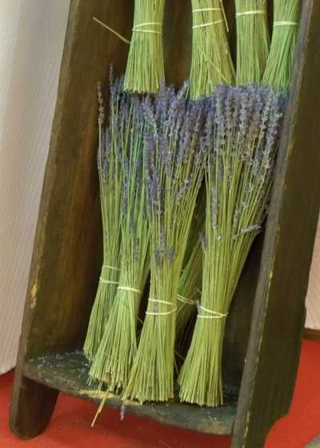
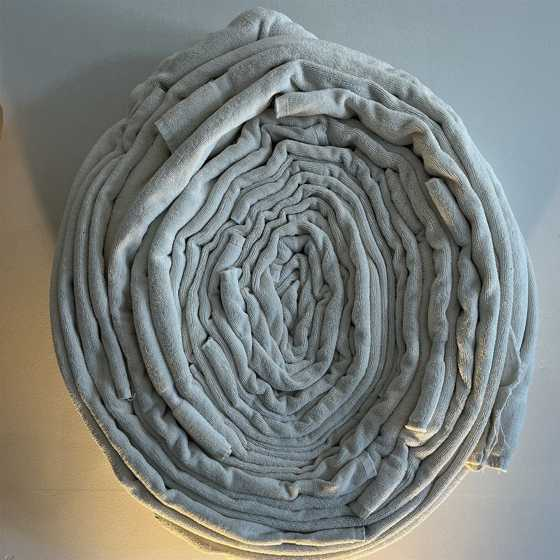
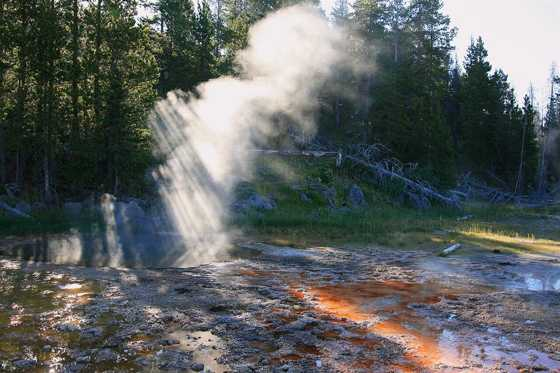
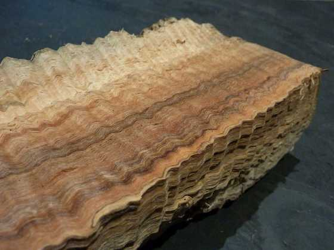
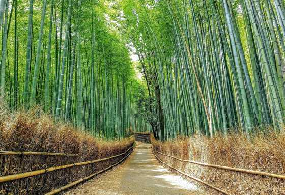
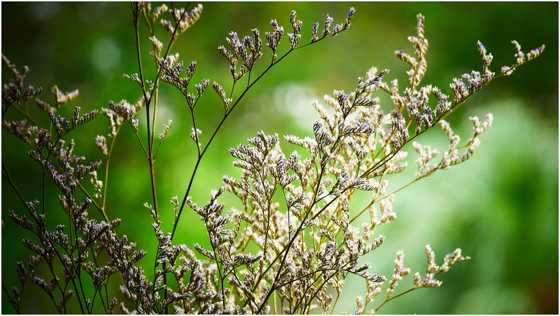
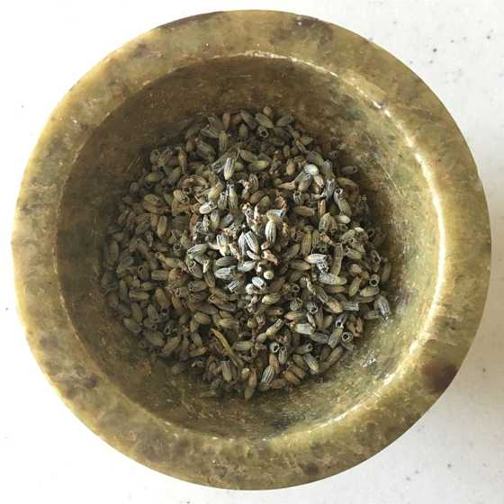

ABOUT
お店について
らくぅーあは、茨城県笠間市にある整体・リラクゼーションのお店です。公式のSNSでは、関節剥がし・リンパ流し・指圧を組み合わせた施術を行うこと、肩こり・腰痛・四十肩・五十肩などのご相談を受け付けていることが紹介されています。
2025年8月に移転し、現在は友部自動車学校の向かいのアパートの一室で営業していると案内されています。
※店名「らくぅーあ」の由来は確認できていません。このページの「ほどく・流す・押す」という切り口は、施術内容から考えた制作側のイメージです。








VOICE
口コミ
以下は、ページ制作側で作成したイメージ例です。実際のお客様の声ではありません。
イメージ例
肩のあたりをゆっくりほぐしてもらい、終わるころには呼吸が深くなっていました。
イメージ例
仕事帰りに立ち寄れる静かな空間で、気持ちまで軽くなる時間でした。
イメージ例
相談しながら力加減を決めてもらえて、安心して身をまかせられました。
ACCESS
アクセス
茨城県笠間市旭町314-1 レオパレスロゼ 102
友部自動車学校の向かい(公式SNSの案内による)
お電話:準備中 ／ 営業時間・定休日:準備中
掲載の写真はフリー素材のイメージで、店舗の実際の様子ではありません。
写真クレジット
- towels.jpg:「Zusammengelegte Handtücher.jpg」User:Mattes(Public domain)
- hero-dusk-sea.jpg:「View from the north coast of the Kunisaki peninsula」Maculosae tegmine lyncis(CC0)
- lavender-bunch.jpg:「Gerbe de lavande」Véronique PAGNIER(CC0)
- towel-roll.jpg:「Towel art multiple towels of same color single towel roll」Peter Woolf(CC0)
- herbal-tea.jpg:「Herbal Tea 01」PagesAndPathsPH(CC0)
- candle-light.jpg:「Scented candle candlelight」Csiiiyu(CC0)
- dried-flowers.jpg:「Dried flowers - 54392349193」GeorgeTan#5 signs off(CC0)
- lavender-buds.jpg:「Lavender Buds」Misterneedlemouse(CC0)
- moss-stone.jpg:Daderot(CC0)
- wood-grain.jpg:「Curly-grain-wood.jpg」Catslash(CC0)
- calm-water.jpg:「Narvijärvi ripples.jpg」kallerna(CC BY-SA 4.0)
- steam-spring.jpg:「Crepuscular rays over the steam from hot spring.jpg」Brocken Inaglory(CC BY-SA 3.0)
- bamboo.jpg:「Sagano Bamboo forest in Arashiyama」Naokijp(CC BY-SA 4.0)
- CC0・パブリックドメインの写真は creativecommons.org(CC0) に基づきます。出典はWikimedia Commons。